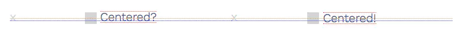

1. 可以使用vertical-align条件
vertical-align用于对齐行内元素。所谓行内元素，即display属性值为下列之一的元素：
- inline
- inline-block
- inline-table 其中，行内元素（inline element）就是包含文本的标签。
而行内块元素（inline-block element），顾名思义，就是位于行内的块元素。可以有宽度和高度（可以由其内容决定），也可以有内边距、边框和外边距。
行内级元素会相互挨着排成行。如果一行排不下，就会在下方再建一行。所有行都会创建所谓的行盒子，行盒子装着自己行中的所有内容。内容的高度不同，行盒子的高度也不同。在下面的示意图中，行盒子的顶部和底部用红色点线表示。
这些行盒子限定了我们可以影响的范围。在行盒子内部，可以通过vertical-align来对齐个别元素。那么，相对于什么来对齐元素呢？
2. 基线与外边界
垂直对齐最重要的参考点，就是相关元素基线。某些情况下，行盒子的上下外边界也会成为参考点。下面我们就来看一看相关元素类型的基线和外边界。
2.1. 行内元素
这里有三行文本紧挨着。红线表示行高的顶边和底边，绿线表示字体的高度，蓝线表示基线。左边这一喊，行高与字体高度相同，因此上下方的红色和绿线重叠在了一起。中间一行，行高是font-size的两倍。右边一行，行高为font-size的一半。
行内元素的外边界与自己行高的上、下边对齐。行高比font-size小不小并不重要。因此上图中红线同时也就表示外边界。
行内元素的基线是字符恰好位于其上的那条线，也就是图中的蓝线。大致来说，基线总是穿过字体高度一半以下的某一点。可以参考W3C规范中详细的定义。
2.2. 行内块元素
从左到右：包含流内内容（“c”）的行内块、包含流内内容且设置了溢出（overflow: hidden）的行内块和未包含流内内容（但内容区有高度）的行内块。红线表示外边距的边界，黄色是边框，绿色的内边距，蓝色是内容区，蓝线是每个行内块元素的基线。
行内块元素的外边界即其外边距盒子的上、下两边，也就是图中的红线。
行内块元素的基线取决于元素是否包含流内内容：
- 有流内内容的行内块元素，基线就是正常流中最后内容元素的基线（左）。这个最后元素的基线是按照它自己的规则找到的。
- 有流内内容但overflow属性值不是visible的行内块元素，基线就是外边距盒子的底边（中）。也就是与行内块元素的下外边界重合。
- 没有流内内容的行内块元素，基线同样是外边距盒子的底边（右）。
2.3. 行盒子
这张图前面出现过。但这次我们画出了行盒子的文本盒子的上、下边（绿色，下面详细介绍）还有基线（蓝色）。同时，还用灰色背景表示了文本元素的区域。
行盒子的顶边与该行中最顶部元素的顶边重合，底边与该行中最底部元素的底边重合。因此图中的红线表示的就是行盒子。
行盒子的基线是个变量：
在使用vertical-align时这一块应该是最令人困惑的了。也就是说，基线画在哪里需要满足很多条件，比如要符合vertical-align指定的条件，同时还要保证行盒子高度最小。这是个自由变量。
因为行盒子的基线并不可见，所以有时候不容易确定它的位置。但实际上有个简单的办法可以令其可见。只要在相关行的开头加上一个字母，比如上图中开头的“x”即可。如果这个字母没有被设置对齐，那么它默认就位于基线之上。
围绕基线的是行盒子中的文本盒子。可以简单地把文本盒子看成行盒子内部未经对齐的行内元素。文本盒子的高度等于其父元素的font-size。因此，文本盒子只是用来盛放未经格式化的文本的。上图中的绿线表示的就是文本盒子。由于文本盒子与基线关联，所以基线移动它也会跟着移动。（W3C规范里称这个文本盒子为strut。）
终于把最难的部分讲完了。现在，我们已经知道了对齐相关的一切要素。下面简单总结一下最重要的两点。
- 有一个区域叫行盒子。行盒子中的内容可以垂直对齐。行盒子有基线、文本盒子，还有上边和下边。
- 还有行内元素，也就是可以被对齐的对象。行内元素有基线，以及上边和下边。
3. Vertical-Align的值
使用vertical-align，前面提到的参考点就会按照某种关系被设置好。
3.1. 对齐行内元素的基线和行盒子的基线
- baseline：元素基线与行盒子基线重合。
- sub：元素基线移动至行盒子基线下方。
- super：元素基线移动至行盒子基线上方。
- <百分比值>：元素基线相对于行盒子基线向上或向下移动，移动距离等于line-height的百分比。
- <长度值>：元素基线相对于行盒子基线向上或向下移动指定的距离。
3.2. 相对于行盒子的基线对齐元素的外边界
- middle：元素上、下边的中点与行盒子基线加上x-height的一半对齐。
3.3. 相对于行盒子的文本盒子对齐元素的外边界
还有两种情况是相对于行盒子的基线对齐，因为文本盒子的位置由行盒子的基线决定。 - text-top：元素的顶边与行盒子的文本盒子的顶边对齐。
- text-bottom：元素的底边与行盒子的文本盒子的底边对齐。
3.4. 相对于行盒子的外边界对齐元素的外边界
- top：元素的顶边与行盒子的顶边对齐。
- bottom：元素的底边与行盒子的底边对齐。
4. 为何Vertical-Align的行为如此乖张
下面我们看看在某些情况下的垂直对齐。特别是一些容易出错的情况。
4.1. 居中图标
有一个问题一直困扰着我。有一个图标，我想让它与一行文本垂直居中。如果只应用vertical-align: middle好像不行，比如这个例子：
1 | <span class="icon middle"></span> |
还是同一个例子，只不过这次多了一些辅助线：

这次可以看清问题所在了。因为左侧的情况是文本没对齐，而是仍然位于基线之上。应用vertical-align: middle，实际上会导致图标中心与不出头小写字母的中心（x-height的一半）对齐，所以出头的字母会在上方突出出来。
右侧，仍然是对齐整个字体区的垂直中点。结果文本基线稍稍向下移动了一点，于是就实现了文本与图标完美对齐。
4.2. 行盒子基线的移动
这是使用vertical-align时一个常见的坑：行盒子基线的位置会受到其中所有元素的影响。假设一个元素采用的对齐方式会导致行盒子移动。由于大多数垂直对齐（除top和bottom外），都相对于基线计算，因此这会导致该行所有其他元素重新调整位置。
下面是几个例子。
- 如果行内有一个很高的元素，这个元素上方和下方都没有空间了，此时要与行盒子的基线对齐，就必须让它移动。矮盒子是vertical-align: baseline。左侧的高盒子是vertical-align: text-bottom，而右侧的高盒子是vertical-algin: text-top。可以看到，基线带着矮盒子移动到了上方。
1 | <!-- left mark-up --> |
在通过vertical-align的其他值对齐一个较高的元素时，也会出现同样的现象。
5. 感谢
引用 掘金:Vertical-Align，你应该知道的一切https://juejin.im/entry/5b1a50e95188257d6a044fbc